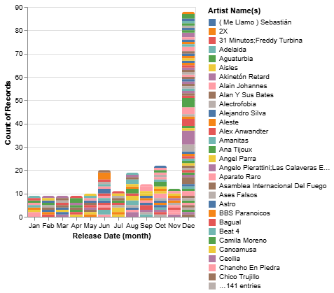

¿Existe una fórmula matemática detrás de los himnos que marcaron a generaciones en Chile? Al analizr las métricas acústicas de las canciones más destacadas de nuestro catálogo nacional, surge una revelación fascinante: lejos de ser un caos de experimentación aislada, nuestros grandes éxitos comparten atributos sonoros sorprendentemente similares.
Esta convergencia de datos nos permite plantear una hispótesis audaz y reveladora: la existencia de una 'canción pormedio' dentro del rock chileno, un molde acústico que definió la banda sonora de todo un país, especialmente durante las décadas de los 80 y 90.
La evidencia acústica de los datos
Al explorar la visualización de los datos, contruida a partir de la base y procesada mediante Vega-Altair, el panorama se vuelve nítido. Los puntos en el gráfico no se dispersan al azar en los ejer de energía o bailabilidad; por el contrario, tienden a agruparse en zonas muy específicas.
Las figuras icónicas de Los Prisioneros, junto a los ecos estructurales heredados del fenómeno de La Nueva Ola, dominan la muestra.

La constante aparición de estos artistas en la cima de la base de datos demuestra que el público conectó masivamente con este perfil sonoro. La visualización, resultado de un cruce transparente de variables acústicas, expone gráficamente cómo estos proyectos musicales lograron calibrar sus composiciones para resonar exactamente en esa frecuencia óptima.
Ficha técnica y datos utilizados
El análisis presentado es el resultado de un proceso transparente y replicable. Para su construcción se utilizan los siguientes elementos:
- Origen de los datos: Extracción de métricas acústicas mediante la API de Spotify.
- Herramienta gráfica: Librería Vega-Altair en lenguaje Python.
- Métricas analizadas: Principalmente Energy (intensidad y actividad) y Danceability (Bailabilidad).